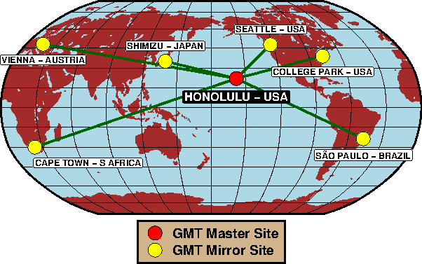

GMT Master and Mirror FTP Sites
You only need to visit one of these sites if you cannot (or will not) do the automatic
install described under the Download section. This is most likely true
if you just want to obtain Windows executables. To connect to your preferred ftp server, click on the
location that is physically nearest you:

Alternatively, click on the corresponding text link below:
- SOEST, Dept of Geology & Geophysics, Honolulu, Hawaii, USA. Serving the Pacific Rim
- NOAA, Lab for Satellite Altimetry, College Park, Maryland, USA. Serving East North America
- IRIS (Incorporated Research Institutions for Seismology), Seattle, Washington, USA. Serving West North America
- IAG-USP, Dept of Geophysics, São Paulo, Brazil. Serving South America
- Vienna U of Techology, Vienna, Austria. Serving Europe
- Tokai U, Shizuoka, Japan. Serving Asia
- TENET, Tertiary Education & Research Networks of South Africa, South Africa. Serving Africa